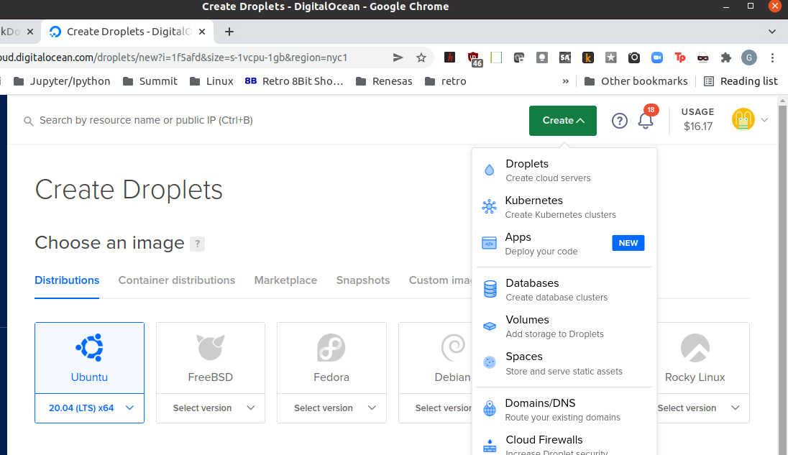
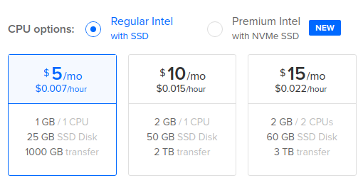
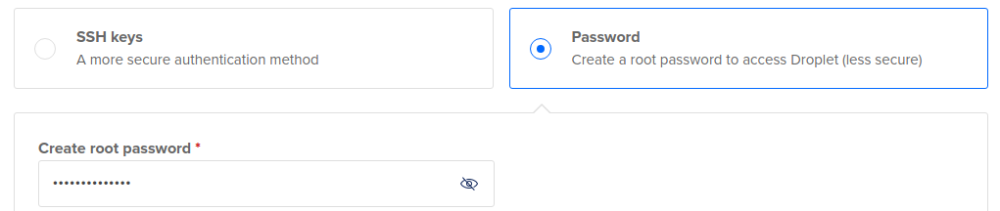
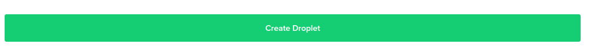

Set up a Digital Ocean server
Create a new account with $100/60 day credit digital ocean. Would also highly recommend you check out the podcast Pythonbytes, from where this discount comes.
Create a new droplet
Choose Ubuntu 20.04(LTS)x64 Distribution 
Select Regular Intel w/SSD for $5/month

Create password Authentication. Do not create New SSH key. You will do this from your linux client.

Click green bar Create Droplet

Initial Server Setup
Follow digital ocean Initial Setup tutorial
From linux pc client
$ ssh root@211.211.211.211 # Enter your new static IP address provided by Digital Ocean
Now you are logged in to your digital ocean server as root
From UFW Essentials Guide
$ adduser geddy
$ usermod -aG sudo geddy
$ ufw allow OpenSSH
$ ufw enable
Create ssh key pair on linux PC client and copy to server
From SSH Key Creation tutorial
$ ssh-keygen -l # enter tnfs when prompted
$ ssh-copy-id geddy@211.211.211.211
Setup ~/.ssh/config on client PC
$ nano ~/.ssh/config
Host tnfs*
HostName 211.211.211.211
User geddy
IdentityFile ~/.ssh/tnfs
$ ssh tnfs # now you have a shortcut to ssh from client into your server
Disable Password Authentication on server
$ sudo nano /etc/ssh/sshd_config
PasswordAuthentication no # then cntl-x and save
$ sudo service ssh restart